×

Exhibit Showcase
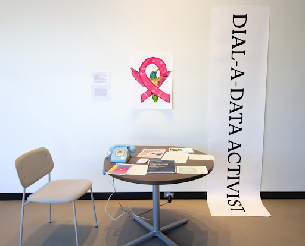
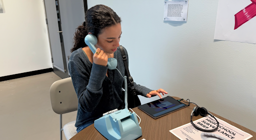
Medium: Drawing, Film, Sound, Postcards, Interactive Installation
This installation centers data activism and explores the intersections of AI, race, justice, and youth empowerment. It challenges algorithmic bias and advocates for ethical, inclusive technology design. Youth are positioned as knowledge producers, sharing unfiltered experiences through oral histories, retro technology such as rotary phones, and immersive audio storytelling.
The work aims to decolonize data and foster cross-generational dialogue by emphasizing community-led approaches and liberatory computing. The rotary phone invites visitors to hear students reflect on AI bias, discriminatory design, and their perspectives on race and technology.
Data Activism Program Participants: Emmi Taylor, Adachukwu Unamka, Chidubem Unamka, Chisom Unamka, Kortni Foreman, Isaac Kiniti, Chase Vanias, Iris Oliver, Tony Clark, Matt Taylor, Dr. Randi Williams, Samira Shirazy, Brady Cruse, Eghosa N. Ohenhen, Saara Y. Uthmaan, Aisha Cora, Sophia Brady, Vina Morris, Nico Montano, Kiana Thompson, Khalil Manigaulte, Jenima Charles, Jamila Morris, Braelon Brown, Mahmoud Amadou, Janet Bajikijay, Marcus Seay, Tatianna Lindsay, Osnel Pierre, Lauren Crawford, Divine Antwi, Brian Mofor, Courtney Mayore, Lorenzo Blackston, Mai Ibrahim, Manaal Farah, Kibreab Gebremichael, Hannah Mondesir, Naeema Hassan, Betel Zewude, Joshua Pite, Zacharias Daniel, Hashi Abdulle, Ramzey Burdette, Ryan Houston, Cailen Simon, Carlin Simon, Alia Flores, Leese Bourcicot, Maya Rajan, Raneem Alsoby, Dr. Cynthia Breazeal
The following audio are clips of the student interviews that were used in the Dial A Data Activist Exhibit.
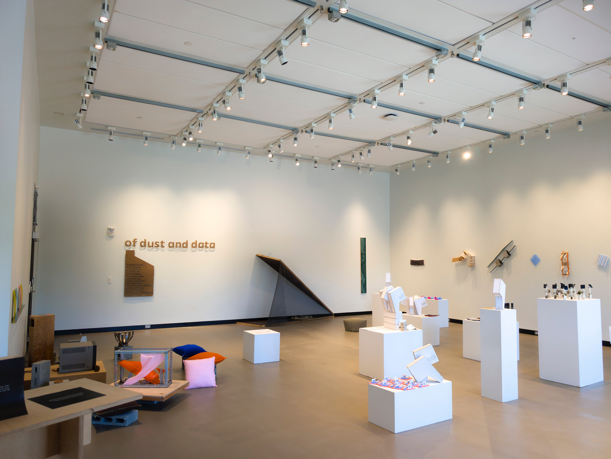
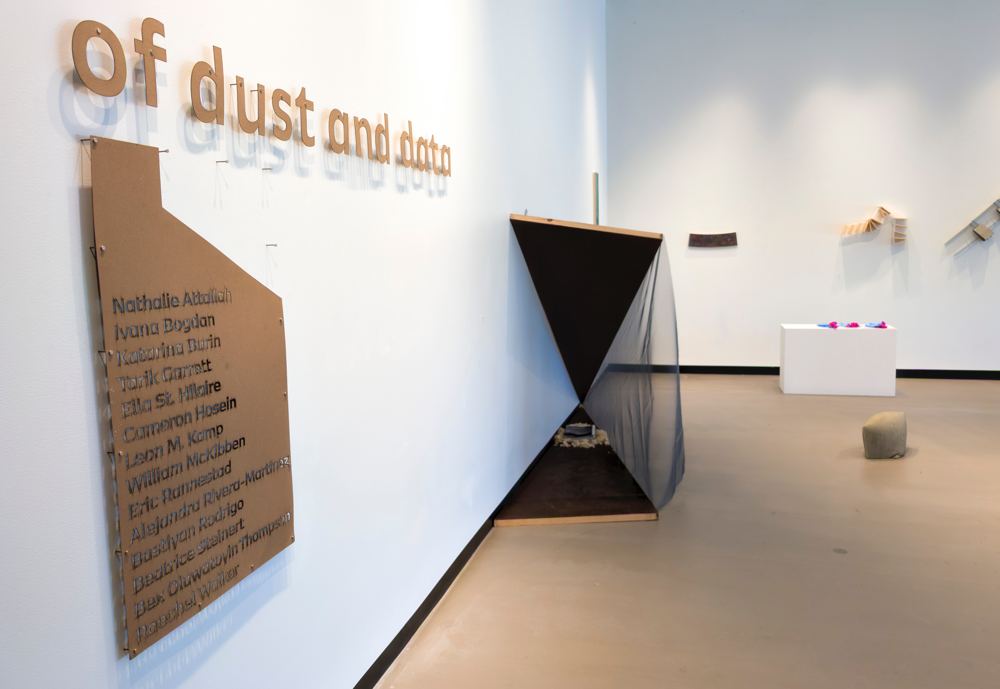
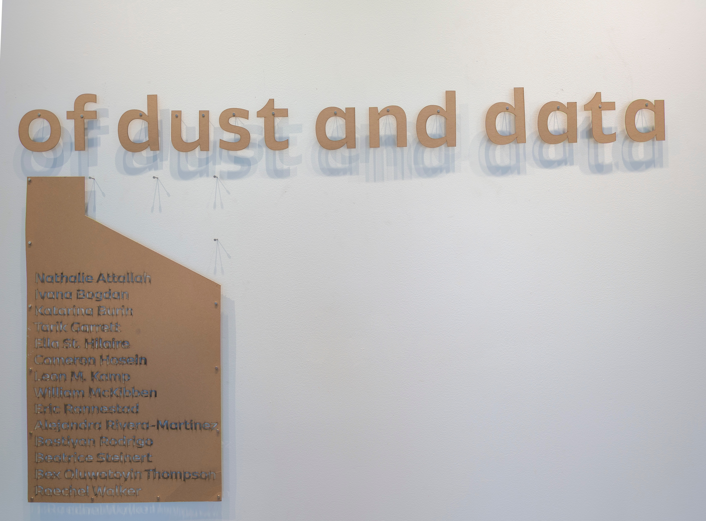
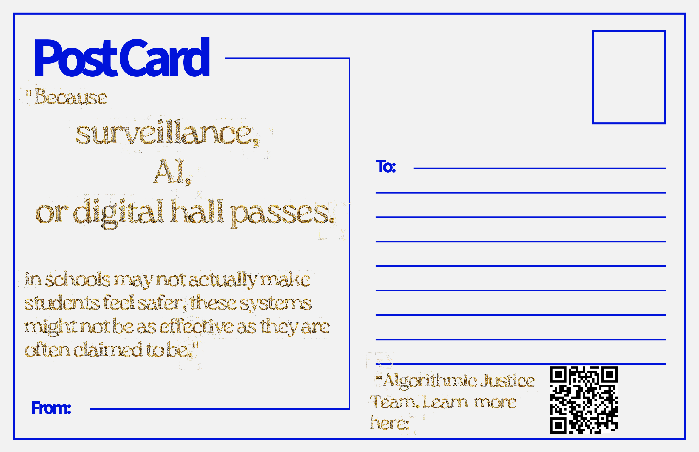
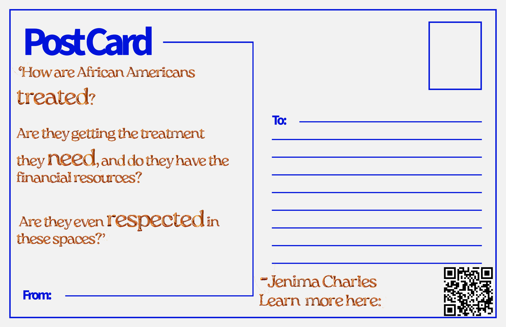
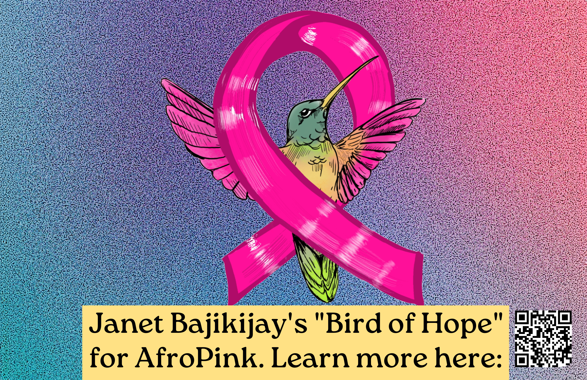
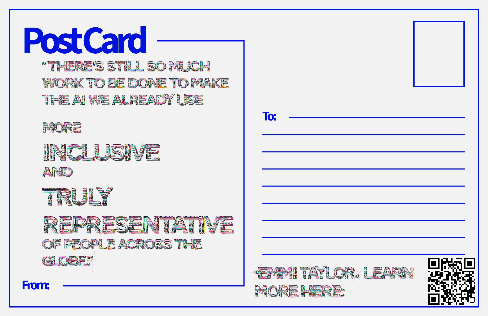
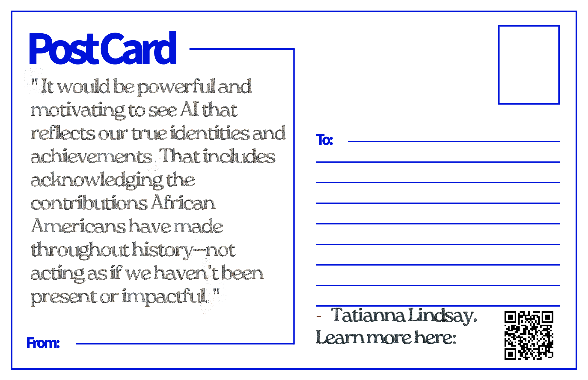
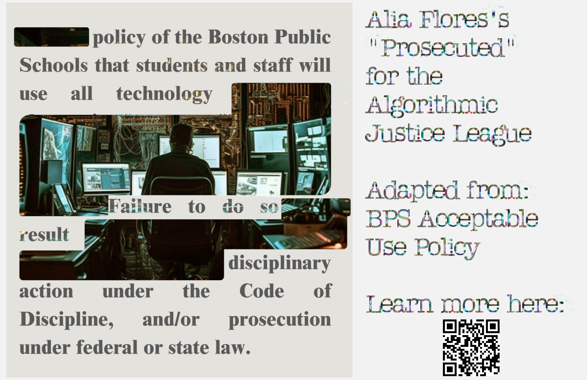
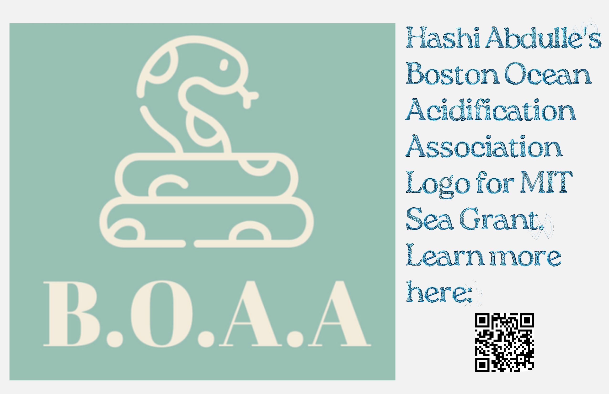
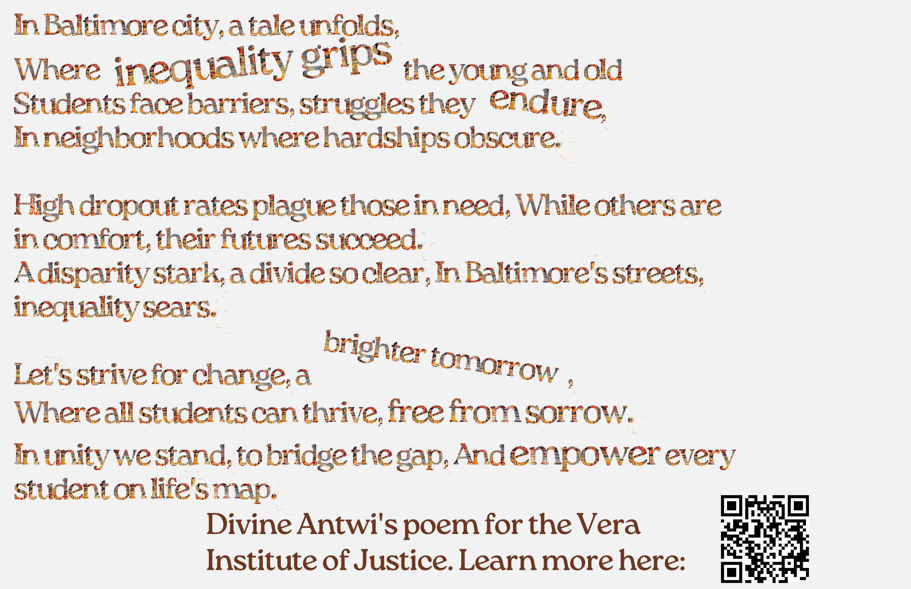